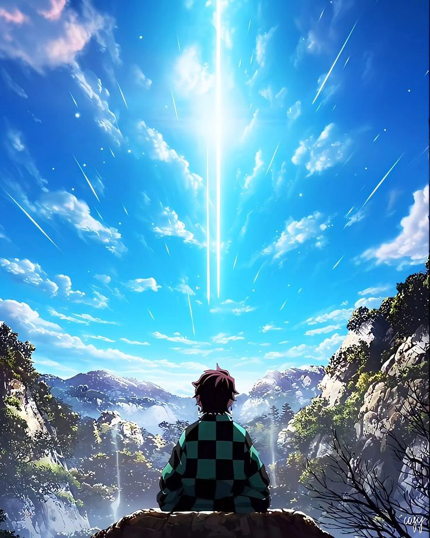

Ambientada en la era Taisho de Japón, la vida del joven Tanjiro Kamado cambia trágicamente cuando su familia es masacrada por un demonio. La única superviviente, su hermana Nezuko, ha sido transformada en una de estas criaturas. Decidido a devolverle su humanidad y vengar a sus seres queridos, Tanjiro se entrena para unirse al Cuerpo de Cazadores de Demonios, iniciando un peligroso viaje lleno de batallas épicas y sacrificios.